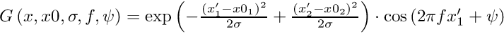
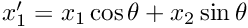
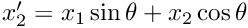
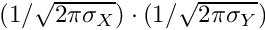
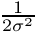

|
Collinearity model
|
Generate 2D Gabor kernel. More...
Functions | |
| function K = | gaborKernel (in kernelSize, in halfSDsq, in theta, in f, in psi, in spatialCompression) |
Generate 2D Gabor kernel.




| function K = gaborKernel | ( | in | kernelSize, |
| in | halfSDsq, | ||
| in | theta, | ||
| in | f, | ||
| in | psi, | ||
| in | spatialCompression | ||
| ) |
| kernelSize | The size of the envelop. |
| halfSDsq | Pre calculated term:  (2x1) |
| theta | Orientation. |
| f | Spatial frequency |
| psi | Phase shift. |
| spatialCompression | Spatial compression(y,x) of the input space in Y/X direction of the kernel (optional) |
| K | 2D Gabor kernel |